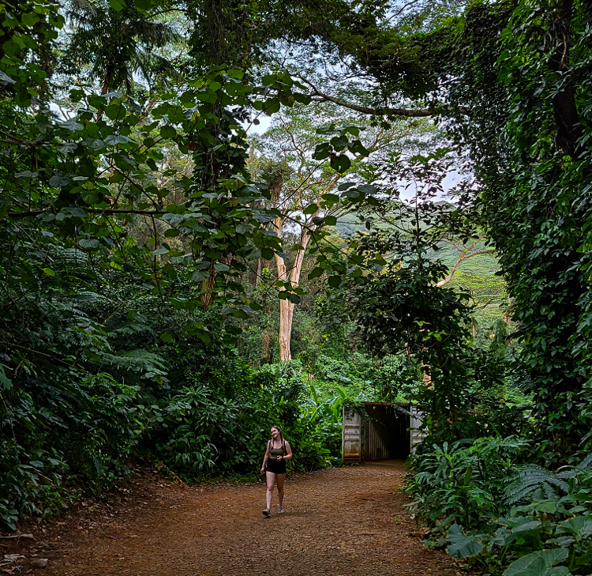

<!DOCTYPE html>
<html>
  <head>
    <title>Your Page Title</title>
    <link href="https://cdn.jsdelivr.net/npm/bootstrap@5.1.3/dist/css/bootstrap.min.css" rel="stylesheet" integrity="sha384-1BmE4kWBq78iYhFldvKuhfTAU6auU8tT94WrHftjDbrCEXSU1oBoqyl2QvZ6jIW3" crossorigin="anonymous">

    <!-- links to style sheets, google fonts, etc. go here -->

  </head>
  <body>

    <!-- your site content goes here -->

    <script src="https://cdn.jsdelivr.net/npm/bootstrap@5.1.3/dist/js/bootstrap.bundle.min.js" integrity="sha384-ka7Sk0Gln4gmtz2MlQnikT1wXgYsOg+OMhuP+IlRH9sENBO0LRn5q+8nbTov4+1p" crossorigin="anonymous"></script>
  </body>
</html>


<nav class="navbar navbar-expand-lg navbar-light bg-light">
  <div class="container-fluid">
    <a class="navbar-brand" href="#">Ashley Lambert</a>
    <button class="navbar-toggler" type="button" data-bs-toggle="collapse" data-bs-target="#navbarText" aria-controls="navbarText" aria-expanded="false" aria-label="Toggle navigation">
      <span class="navbar-toggler-icon"></span>
    </button>
    <div class="collapse navbar-collapse" id="navbarText">
      <ul class="navbar-nav me-auto mb-2 mb-lg-0">
        <li class="nav-item">
          <a class="nav-link active" aria-current="page" href="#">Home</a>
        </li>
        <li class="nav-item">
          <a class="nav-link" href="index2.html">About</a>
        </li>
        <li class="nav-item">
          <a class="nav-link" href="#">Work</a>
        </li>
        <li class="nav-item">
          <a class="nav-link" href="#">Contact</a>
        </li>
      </ul>
      <span class="navbar-text">
      </span>
    </div>
    </div>
    </nav>

<br>


  <div class="container">
  <div class="row">

    <div class="col-md-5">
      
    </div>

<br>

    <div class="col-md-7">
        <h1>About Me</h1>
      <p>My name is Ashley Lambert and I am a senior in the Graphic Design program at California State University of Sacramento. I am 22 years old and grew up in Sacramento. I graduated from John F. Kennedy in 2018 and began college in the Fall of 2018. I enjoy photography and capturing interesting subjects I come across. I enjoy taking photographs in Sacramento as well as in Utah and Arizona when I go on trips. I have a particular interest in landscape photography, but enjoy having a subject for my photographs as well. I was inspired by my dad to start photography at around the age of 12. I have also had a talent for drawing since I was a kid. Both of these skills have helped me develop a good eye for photography and design. </p>
    </div>
